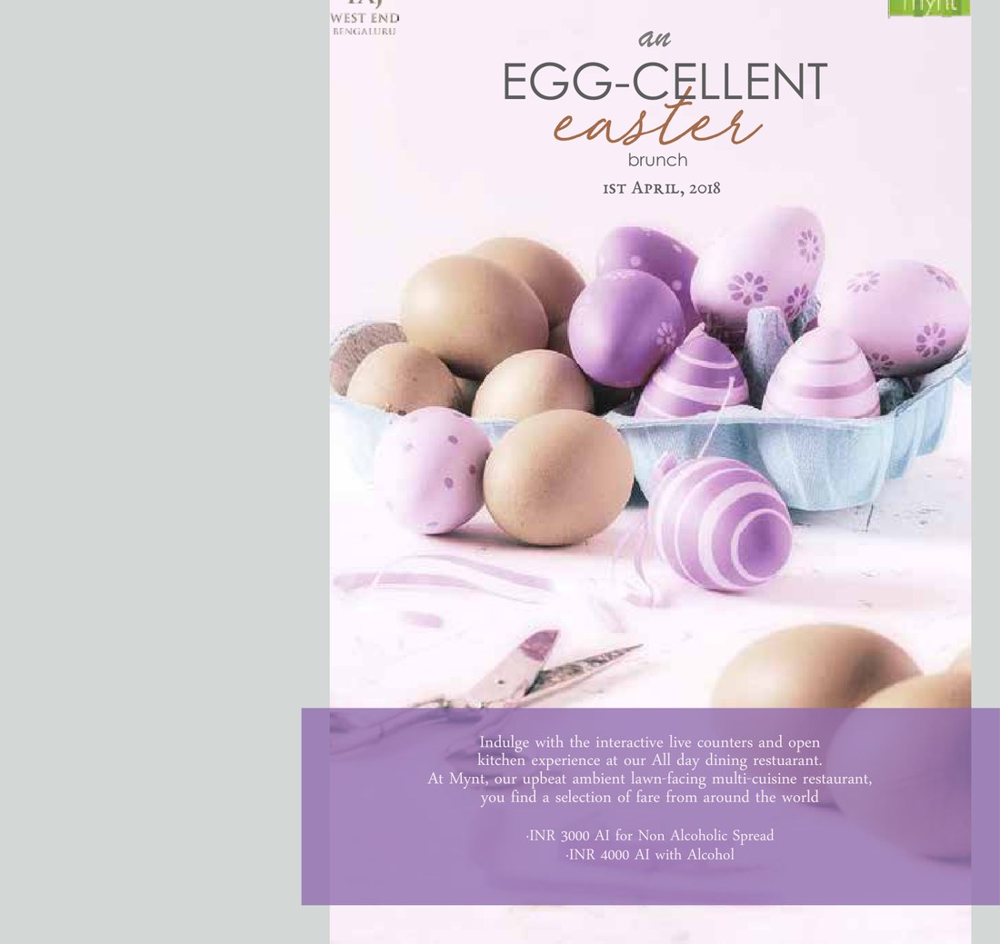
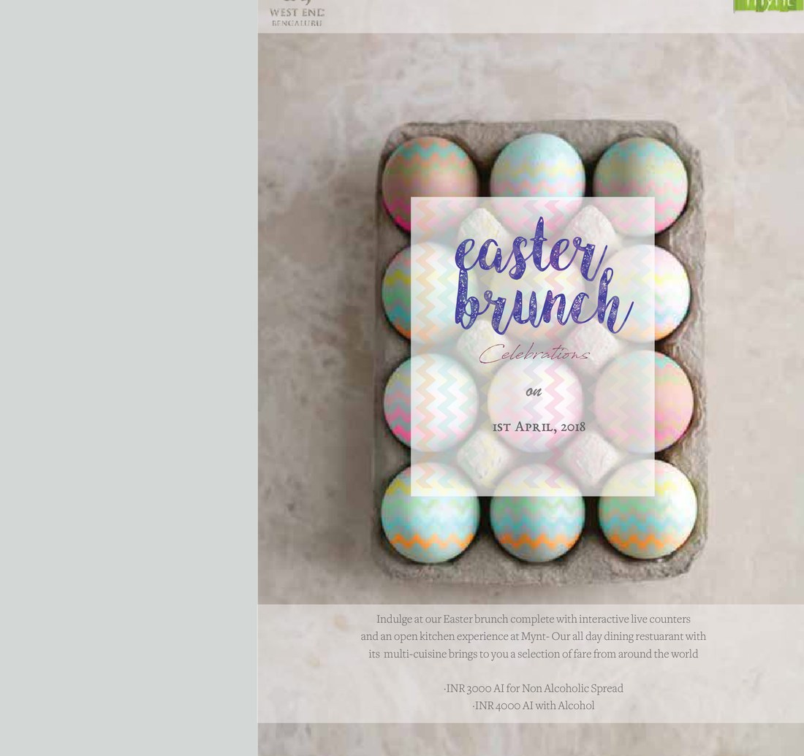
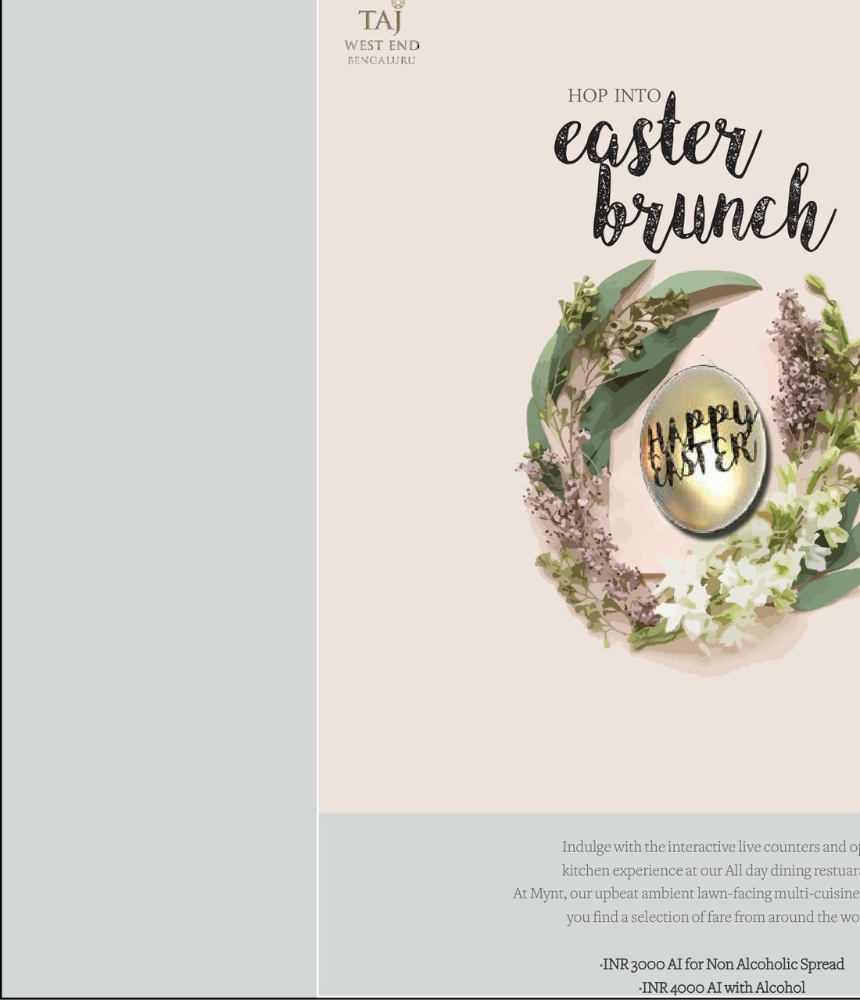

05Related Work
Seasonal posters for the Easter brunch at Mynt, the Taj West End in Bengaluru — the same offer dressed three pastel ways, with hand-lettered headlines and a premium, spring-soft palette.
For the Easter brunch at Mynt, the brief was a seasonal poster — and the answer was three of them. Rather than commit to one image, the campaign offers a small set of routes around a shared pastel palette and hand-lettered voice, so the property can pick the mood that fits the year.
Soft purples, cream and spring green; eggs photographed and illustrated; headlines written by hand. Premium, but warm.



Different pictures, the same handwriting.
What holds the set together is the lettering and the palette, not the imagery. Each route picks a different hero — a wreath and a golden egg, a basket of purple eggs, a pastel carton — but the headline is always the same hand-drawn script, and the colours never stray far from spring. A guest sees three posters and reads one brunch.
Sitting alongside the Sunday-brunch work for the same outlet, the Easter set shows how a single restaurant's marketing can flex by season while staying recognisably itself — the everyday brunch in food photography and bold type, the Easter brunch in pastels and hand lettering.